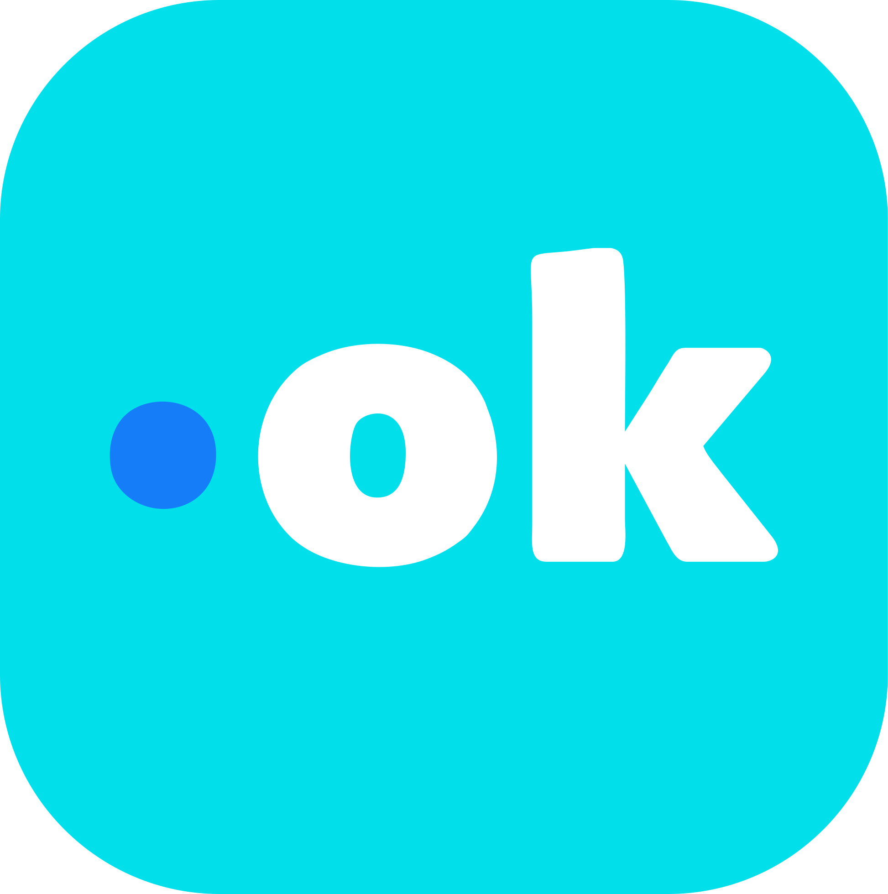
Punto Ok! TótemMarcación presencial
- Pensada para marcación presencial
- Reconocimiento facial
- Sin toque
- Modo offline
- Uso en puntos fijos de marcación
Control de asistencia, turnos y salarios en un solo sistema.
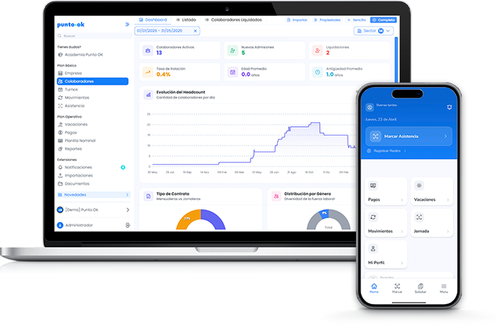
Muchas empresas todavía manejan asistencia, turnos, cierres
salariales y reportes de forma manual o dispersa.
Resultado: más errores, más tiempo perdido y menos control.
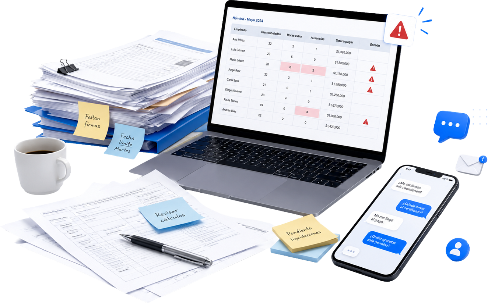
Cierres más lentos y tareas repetitivas.
Marcaciones incompletas y poca visibilidad.
Errores, horas extras mal calculadas y costos ocultos.
Para administración, RR.HH. y gestión central.
Ver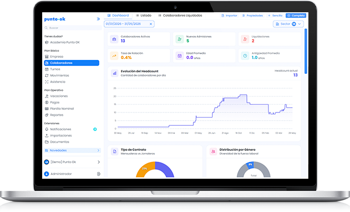
Para usos en puntos fijos de marcaciones.
Ver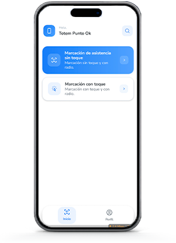
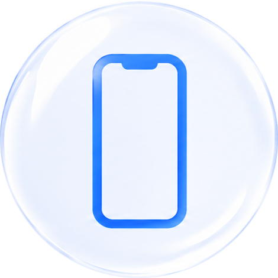
Para marcar, consultar y operar desde el celular.
Ver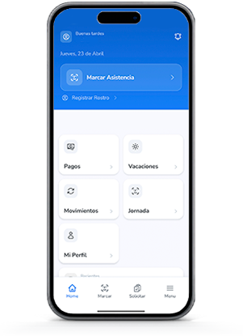
App Punto Ok! Tótem y Colaboradores según la necesidad de cada empresa.

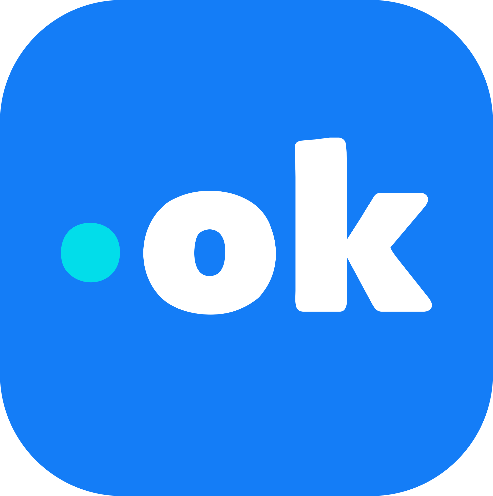
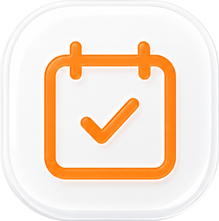
Presencia · Permiso · Enfermedades
Anticipo · Compras · Movilidad · Bonus · Gratificaciones · Comisiones
Solicitud y control de vacaciones
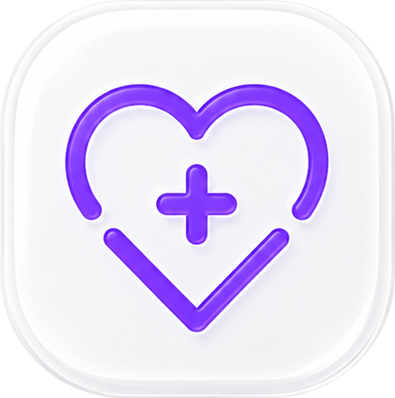
Gestión de reposos médicos
Historial de marcaciones · Geolocalización · Face ID
Punto Ok ayuda a las empresas a controlar asistencias, organizar turnos, gestionar información laboral y simplificar procesos de RR.HH. desde la web y apps móviles.
Clientes
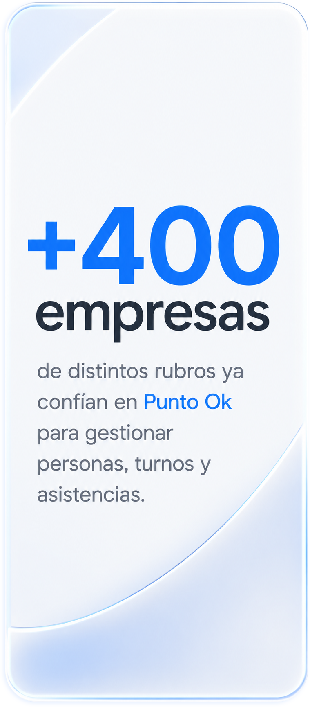
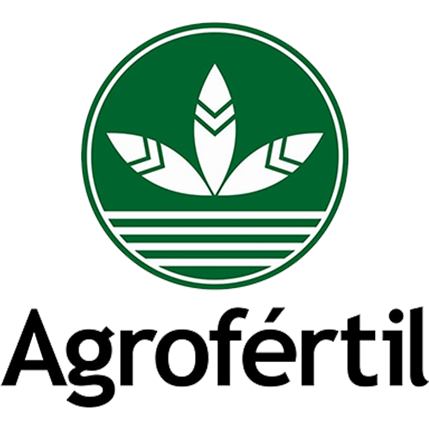
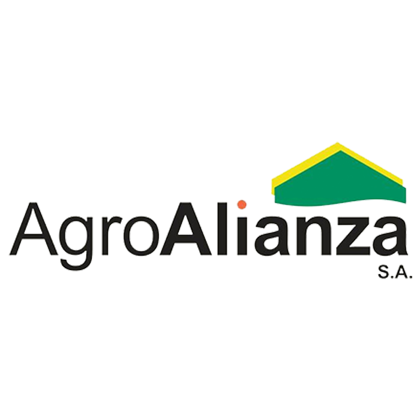
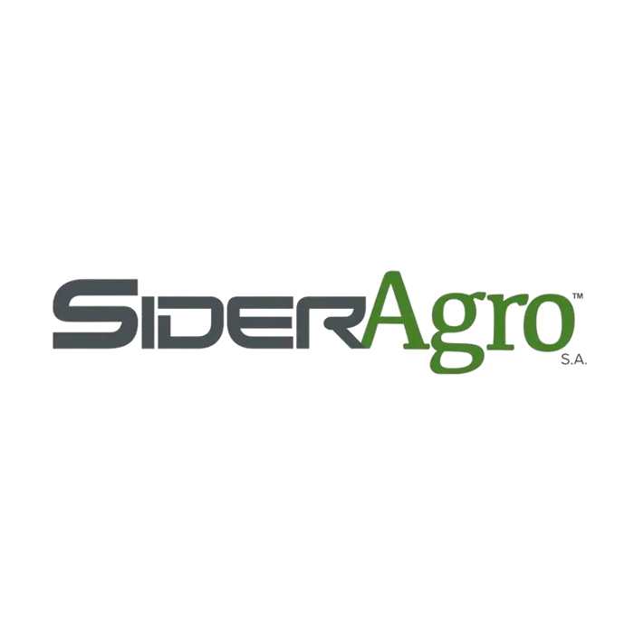
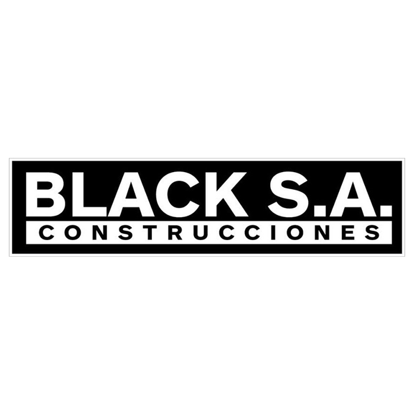
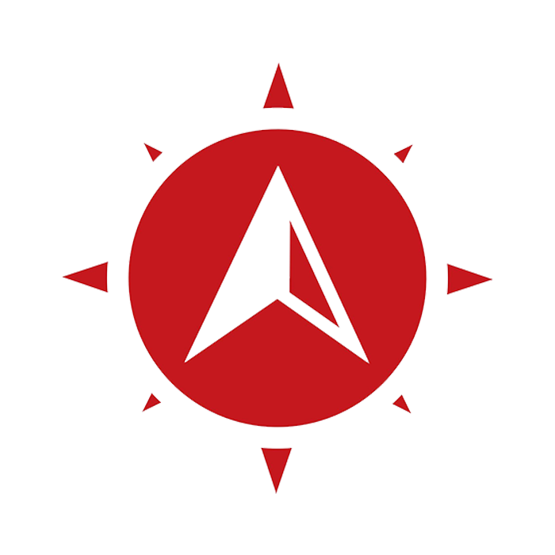
"El acompañamiento post-implementación y la facilidad de uso son excelentes. Es súper intuitivo y facilita la actividad diaria de RH."
"No hemos tenido ningún inconveniente. La plataforma es fácil de usar y el soporte siempre está dispuesto a ayudar. Recomendamos Punto Ok."
"Nuestra experiencia ha sido excelente. Información en tiempo real y un soporte 10/10 que responde ágil y efectivo."
La tienda se abrió en una ventana emergente.